Значимые узлы восхождения¶
Все 114 значимых узлов классов восхождения, по путям и классам. У каждого есть своя страница.
Дренг¶
Наследник йотунов¶
| Название | Эффект | |
|---|---|---|
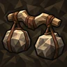 |
Плечи исполина | +50% к максимальному переносимому весу |
| Ритм исполина | Каждый второй слэм считается заряженным | |
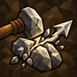 |
Раскол земли | Слэмы оставляют трещину в направлении прицеливания; следующий слэм, попавший в неё, распространяется вдоль трещины |
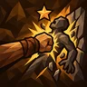 |
Прижать к стене | Отталкивание, вбивающее врага в препятствие, становится накоплением оглушения |
| Горная стойка | ×1,3 броня во время слэма +30% сопротивление оглушению во время слэма +50% получаемое отбрасывание во время слэма |
|
| Гул недр | +50% афтершок repeat chance ×0,5 афтершок урона для повторов |
|
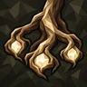 |
Кровь древних | 50% увеличение эффекта взятых малых узлов |
| Прыжок исполина | Альтернативная атака дубинами становится прыжком вперёд со слэмом при приземлении | |
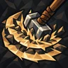 |
Второй толчок | +100% шанс афтершока у заряженных слэмов |
| Земля помнит | Слэмы переносят часть оставшихся недугов поражённых врагов на землю | |
| Крепость удара | +3 фортификация слэмами при оглушении цели +3 фортификация афтершоками при оглушении цели |
|
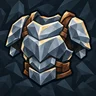 |
Каменная кожа | ×1,5 брони от экипированного: нагрудника |
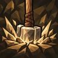 |
Всем весом | Высота падения увеличивает область и отталкивание удара при приземлении; максимальная грузоподъёмность увеличивает его накопление оглушения |
Берсерк¶
| Название | Эффект | |
|---|---|---|
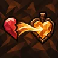 |
Кровь вместо страха | Адреналин равен недостающему здоровью и полон при низком здоровье; больше ничто его не меняет. Полная шкала держит тринкеты активными, срабатывая не чаще раза в 8 с |
| Первый вкус битвы | Попадания ваших ручных атак по врагам дают 2 ярости, не чаще раза за атаку и в пределах общего лимита прироста ярости +5 ярости при убийстве +4 ярости при оглушении цели |
|
| Сорвать железо | Ваши ручные атаки накапливают разрушение брони всем своим уроном, а не только дробящим; каждое очко ярости даёт им 2% увеличения накопления разрушения брони | |
| Два клыка | Держите по одноручному топору в каждой руке. Попадание одним делает следующий удар другим по тому же врагу в течение 2.5 с сильнее на 40% урона и 50% разрушения брони | |
| Не склонить головы | Ваш порог стойкости не ниже здоровья на границе низкого здоровья +25% к стойкости |
|
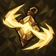 |
За последней чертой | Адреналин от «Кровь вместо страха» может подниматься выше 100%, когда здоровье падает ниже границы низкого здоровья 1% увеличение trinket effect за каждые 1% адреналина сверх полной шкалы |
| Неоконченная схватка | Успешный блок или идеальное уклонение заново запускают задержку перед потерей ярости. Ярости это не даёт и неистовство не останавливает | |
| Красная клятва | Пока действует стойкость, каждое очко ярости даёт на 2% больше здоровья, вытягиваемого вашим уроном | |
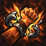 |
Разорвать предел | При полной ярости ваша следующая ручная атака начинает неистовство: ярость убывает за 8 с, её эффект на 50% сильнее, и ничто не пополняет её, пока она не иссякнет |
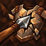 |
В открытую рану | Ваша следующая ручная атака по врагу, чью броню вы полностью разрушили, расходует ваше разрушение брони на нём и наносит на 60% больше урона |
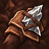 |
Закалиться о врага | Полное разрушение брони врага даёт вашей стойкости на 50% больше эффекта на 6 с; новое полное разрушение обновляет его |
Хмельной ярл¶
| Название | Эффект | |
|---|---|---|
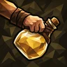 |
Бутыль в руке | Медовуха из хотбара берётся в руку: атака бросает её за 10 выносливости, альтернативная атака выпивает. Бутыль - снаряд: от 30 (медовуха Лугов) до 150 (Пепельных земель) урона стихии медовухи +500 вместимости медовух на ячейку |
| Пир перед битвой | Пока действует выпитая медовуха, 35% затрат выносливости уходит в долг (не больше 40), который выплачивается по 6 в секунду, когда вы перестаёте тратить | |
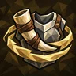 |
Хмельная отвага | +5 фортификация при выпивании медовухи Укрепление от выпитой медовухи держится на 8 с дольше |
| Выдержка | Медовухи сильнее на 25% при любом способе применения: выпитые, в бочке, брошенные во врага (урон ядом) или переданные союзнику. Применяется один раз | |
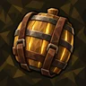 |
Погреб за плечами | Бочка на спине хранит одну медовуху (Shift + ПКМ): её эффект действует на вас постоянно и сильнее на 25%, мгновенное лечение растягивается на 60 с |
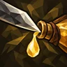 |
Последняя капля | Брошенная медовуха, попавшая во врага, продлевает один действующий эффект выпитой медовухи на 3 с, не больше 30 с на эффект; одно продление на бросок |
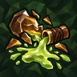 |
Боевое варево | Брошенные медовухи разбиваются ядовитым всплеском 2.6 м: 18 урона ядом × крепость, шанс отравления 100%. Лечение не становится уроном |
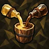 |
Купаж | Бросок медовухи другого семейства, чем прошлая, даёт заряд купажа (до 3): 15% эффекта и урона за заряд. То же семейство сбрасывает купаж |
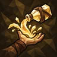 |
За ваше здоровье | Брошенная медовуха, попавшая в союзника, даёт ему её эффект с вашими бонусами и не ранит его. Бутыль тратится и при промахе |
| Круговая чаша | Когда вы пьёте медовуху, союзники в 10 м получают её длительный эффект на 50% срока. Их копия дальше не передаётся | |
| Пир без конца | Медовуха вашей бочки действует и на союзников в радиусе 8 м, пока они рядом. Медовуха не расходуется, эффект не повторяется для каждого союзника |
Скиталец¶
Стрелок сумерек¶
| Название | Эффект | |
|---|---|---|
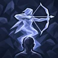 |
Призрачный лучник | Выстрел из лука призывает над вами призрачного лучника на 8 с: он стреляет по врагам в 25 м вашим луком на 25% урона выстрела |
| Ближняя охота | ×3 скорости натяжения луков ×0,3 bow shooting effective range Пока зажата атака, лук выпускает стрелу при полном натяжении и начинает натягивать следующую |
|
| Воздушный прицел | Натягивая лук в воздухе, вы зависаете за выносливость - до 5 с за полёт; выпуск, кувырок или нехватка выносливости прекращают зависание 30% увеличение скорости натяжения луков в воздухе |
|
| Возвратный залп | Снаряды возвращаются к вам, прошивая врагов на пути на 35% своего урона, и повторяют попадание, долетев до вас. Боеприпасы не возвращаются ×0,5 урона снарядов |
|
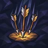 |
Ливень стрел | Средняя кнопка мыши с луком: 1.5 с натяжения отмечают круг, и через 1.8 с в него падает в 20 раз больше стрел выстрела, каждая прошивает врагов на 30% урона |
| За гранью выстрела | 25% увеличение bow shooting effective range Выстрелы из лука наносят до 50% more урона тем больше, чем дальше цель: от 50% эффективной дальности лука до её границы; за границей бонус не растёт |
|
| Сойти с плеч | Призрачный лучник сходит вниз призрачным приспешником: он носит копии вашего оружия, щита и брони и сражается издали или вблизи в зависимости от оружия | |
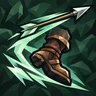 |
Стрела на бегу | Натяжение и выстрел из лука меньше замедляют, а 1.2 с после выстрела можно бежать, не теряя следующее натяжение |
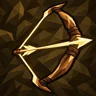 |
Перенатяг | Удержание полностью натянутого лука - перенатяг: за 2 с урон растёт до 100% increased, расход выносливости при этом удвоен; выпуск или отмена сбрасывают его |
| Одна стрела | Лук выпускает одну стрелу; каждая дополнительная стрела выстрела вместо этого даёт ему 30% more урона |
Колдун¶
Повелитель бури¶
| Название | Эффект | |
|---|---|---|
| Покров ливня | Пока вы влажны, попадания влажных врагов в вашем присутствии наносят вам на 20% меньше урона. Снижение одно, сколько бы их ни было | |
| Проводящая плоть | 40% увеличение накопления шока против мокрых целей Первый шок, который ваше попадание накладывает на влажного врага, даёт одну дополнительную проверку «Воли грома», не чаще раза в 1 с. Молния самой грозы её не даёт |
|
| Гром победы | Убийство шокированного врага даёт 5 адреналина (растёт с получением адреналина), один раз за убийство - и убийства вашей грозы тоже | |
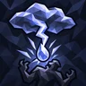 |
Воля грома | Каждые 1.5 с - шанс 35%, что молния ударит случайного влажного врага в вашем присутствии на 50% урона вашего оружия |
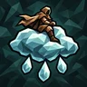 |
Оседлать бурю | Удерживайте прыжок, чтобы парить на своей дождевой туче; её дождь (4 м, растёт с областью) смачивает всё внизу. Бег - низкий быстрый полёт; полёт тратит стамину |
| Расколоть небосвод | 50% увеличение шанса критического удара против мокрых целей Критическое попадание по влажному врагу получает 50% к накоплению шока этим же попаданием |
|
| Эхо грозы | Активация тринкетов прибавляет «Воле грома» 30% шанса на 6 с (дольше с длительностью баффов). Новая активация обновляет окно; оно не складывается | |
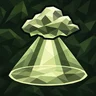 |
Небесный простор | Пока вы летите на туче, область действия растёт с высотой, до 100% больше на 5 м. Только у эффектов, у которых уже есть область |
Ткач стихий¶
| Название | Эффект | |
|---|---|---|
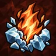 |
Память пламени | Когда ваше огненное заклинание поджигает обмороженного врага, до 50% оставшегося обморожения (не больше 3 с) становится мгновенной вспышкой горения, а обморожение тает |
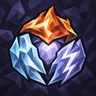 |
Стихийная мантия | Каждый заряд резонанса даёт 10% сопротивления своей стихии; полная настройка даёт 30% сопротивления своей стихии. Действует большее из двух, но не оба |
| Тихая гроза | Ручные попадания холодных заклинаний по врагу под шоком продлевают его обморожение на 1 с, не дальше чем на 6 с вперёд; сами обморожение они не начинают | |
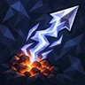 |
Гром над углями | 50% увеличение накопления шока против горящих целей |
| Три голоса | Попадания ручных заклинаний дают заряд резонанса своей стихии: огня, холода или молнии, по одному каждой. Смешанный удар засчитывает только преобладающую | |
| Единый голос | Касты одной стихии подряд дают настройку: до 4 зарядов по 10% к накоплению её недуга. Другая стихия сбрасывает настройку | |
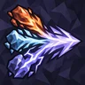 |
Согласие стихий | При всех трёх зарядах резонанса следующий ручной каст расходует их и получает 30% своего урона в виде дополнительного урона огнём, холодом и молнией поровну |
| Смена узора | Расход полного резонанса даёт следующему ручному касту другой стихии 40% к скорости сотворения. Один заряд; срабатывающие сами заклинания его не тратят и не копируют |
Ратник¶
Копьеносец арены¶
| Название | Эффект | |
|---|---|---|
| Ответная поступь | После блока следующая атака ближнего боя делает шаг к атакующему, после парирования - к врагу под прицелом | |
| Мера копья | Укол копьём на дальнем краю досягаемости усиливает следующий эхо-укол своей серии | |
| Ответ чемпиона | +1 эхо-уколов на следующем попавшем уколе копьём после парирования | |
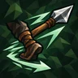 |
Шаг на песке | Сразу после укола копьём уклонение становится коротким отступающим шагом, не прерывающим серию эхо-уколов; стоит выносливости и не даёт неуязвимости |
| Круг остриёв | +30% устойчивости к оглушению копий страйками | |
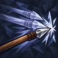 |
Строй одного | Дополнительные страйки основной атаки ближнего боя становятся эхо-ударами: призрачные копии оружия одна за другой бьют поражённого врага копьями +2 extra strikes копий |
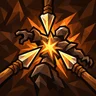 |
Теснить строй | 40% увеличение накопления оглушения копьями страйками Когда цель серии эхо-уколов заново оглушена, остаток серии наносится быстрее |
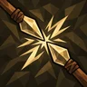 |
Приковать остриём | Эхо-уколы толкают цель к точке исходного укола |
| Смена противника | Когда цель серии эхо-уколов погибает, остаток серии переходит на одного врага рядом |
Фантом¶
| Название | Эффект | |
|---|---|---|
| Шаг за грань | Фантомные удары возникают у другого противника рядом с поражённым, если он есть, и достают на 50% дальше. Один фантом по-прежнему бьёт одну цель | |
| Возвращение тени | После кувырка следующее попадание ближним боем в течение 4 с вызывает гарантированный фантомный удар. Один заряд, не складывается | |
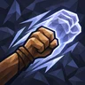 |
Обретённая форма | Фантомные удары получают модификаторы фантомных ударов и могут накладывать недуги своим уроном. Ничто из вызвавшего их удара не применяется дважды |
| Плотность отражения | Фантомные удары наносят 36% исходного удара вместо 24%. Остальные множители урона повторно не применяются | |
| Бесконечный призрак | Фантомные удары могут вызывать фантомные удары ×0,75 шанс срабатывания с каждым последующим срабатыванием фантомными ударами ×0,5 шанс фантомного удара |
|
| Неполное присутствие | Фантомный удар даёт 40% к рейтингу уклонения на 2.5 с. Новые фантомы обновляют время, но не величину | |
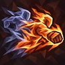 |
Отражение Муспельхейма | Фантомные удары наносят весь урон огнём и могут им поджигать. Несовместимо с «Отражением Нифльхейма» |
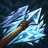 |
Отражение Нифльхейма | Фантомные удары наносят весь урон холодом и копят им обморожение. Несовместимо с «Отражением Муспельхейма» |
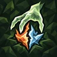 |
Помеченный двойником | Фантомный удар помечает врага на 8 с. Ваш следующий ручной удар по нему расходует метку: 60% к накоплению недуга этой стихии |
Мастер осады¶
| Название | Эффект | |
|---|---|---|
| Осадный обоз | +2 к лимиту баллист | |
| Баллиста на голове | Ваш лимит баллист всегда равен 1, и эта единственная баллиста едет у вас на голове: она стреляет по врагам вокруг вас из арбалета с панели быстрого доступа вашими активными болтами. На земле баллисту установить нельзя для баллист | |
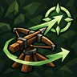 |
Приказ осады | Ваши ручные попадания из арбалета помечают врага для баллист на 12 с: они берут его первым, пока он в дальности и на линии огня; метка одна |
| Бережливый оружейник | +25% шанс сберечь болты баллист | |
| Удар по храповику | Ремонт своей баллисты даёт ей 50% увеличенной скорострельности и 50% увеличенного шанса и накопления недугов на 3 с; повторный ремонт обновляет | |
| Раскат осады | Когда метка переходит на нового врага, готовые баллисты стреляют по нему по очереди через 0.2 с; первое попадание каждой наносит на 50% больше урона. Раз в 6 с | |
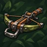 |
Осадные арбалеты | 25% увеличение crossbow modifier effect |
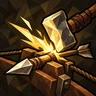 |
Взвести до предела | Ремонт своей баллисты заряжает её следующий выстрел базовым бонусом заряженной атаки и всеми вашими бонусами заряженных атак. Один заряд на баллисту, тратится при выстреле даже при промахе; не чаще раза в 3 с |
| Руны на станине | Ремонт своей баллисты передаёт ей ваше насыщение стихий на 3 с: каждый выстрел добавляет 35% накопленного стихийного урона |
Трикстер¶
Змеевед¶
| Название | Эффект | |
|---|---|---|
| Тихая лихорадка | Ваш яд усиливается на врагах, которых вы какое-то время не били ручными ударами | |
| Два клыка | Попадание по тому же врагу другим оружием, чем в прошлый раз, быстрее копит отравление | |
| Змеиный выводок | Когда отравленный враг умирает, часть вашего оставшегося отравления переходит на одного врага рядом | |
| Знать противоядие | +3 регенерации здоровья при отравлении цели недавно (4 с) | |
| Сбросить кожу | Кувырок снимает часть яда с вас и оставляет короткий ядовитый след | |
| Ядовитый запас | Часть яда сверх предела отравлений сохраняется как шанс яда для следующего удара по той же цели | |
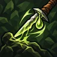 |
Собрать горечь | Ручное убийство отравленного врага сохраняет часть вашего яда на нём как шанс яда для следующего ядовитого удара |
| Выжать яд | Ручные криты по отравленным врагам заставляют одно ваше отравление быстрее нанести оставшийся урон |
Варден¶
Стальной скальд¶
| Название | Эффект | |
|---|---|---|
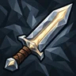 |
Крепость стали | +30% прочности предмета |
| Вечный горн | Экипированные предметы и ожившее оружие восстанавливают 1% максимальной прочности в секунду, даже в бою; сломанное ожившее оружие возвращается с 30% | |
| Ожившая сталь | Оружие ближнего боя в четырёх крайних правых ячейках хотбара оживает и сражается за вас. Его нельзя убить: каждый нанесённый удар снимает с предмета прочность в размере 40% его урона, удары по нему снимают прочность один к одному, а удары, принятые за вас, на 0.5 за единицу урона. Прочность — его здоровье: здоровье приспешников и прочность конструктов поднимают её максимум. Первое живое оружие не резервирует эйтр, второе резервирует 40, а каждое следующее вдвое больше предыдущего | |
| Личное клеймо | Собственные базовые броня, уклонение и рунный щит каждого надетого предмета брони увеличены на 6% за каждые 100 его максимальной прочности, не больше 60% | |
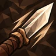 |
Острие на века | +3 к базовому урону за каждые 100 текущей прочности оружия, по его собственным типам урона. Оружие в руках и ожившее оружие |
| Оружейный заслон | Пока вы блокируете, ожившее оружие прекращает атаки и кружит вокруг вас; оно принимает 40% каждого дошедшего до вас удара на свою прочность, сколько выдержит | |
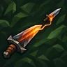 |
Общая закалка | Ожившее оружие наследует 50% ваших подходящих увеличений урона и скорости атаки. Ваш собственный урон ×0.25 |
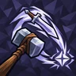 |
Приказ молота | Ваше ручное попадание назначает цель ожившему оружию; его атаки по ней идут одна за другой, через 0.3 с, в течение 8 с |
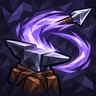 |
Зов наковальни | Отзыв ожившего оружия клавишей ячейки - рывок к вам с ударом по каждому врагу на пути. Перезарядка 8 с |
| Одно со сталью | Удары ожившего оружия считаются вашими, поэтому работают все ваши пассивы и эффекты при попадании. Ожившее оружие: ×0.5 скорости атаки, ×0.5 урона |
Судьбовяз¶
| Название | Эффект | |
|---|---|---|
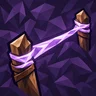 |
Нить памяти | Связи посоха держатся пять секунд после последнего контакта. Бонусы удержания связи продлевают это время. |
| Последняя нить | Связанные союзники не могут погибнуть от урона. Вы получаете 200% урона, который они получают, даже при 1 здоровья. | |
| Призрачный ответ | Атака связанного союзника запускает призрачную атаку оружием носителя по той же цели. | |
| Сила оберегов | 50% увеличение trinket effect | |
| Общий круг | Союзники поблизости связываются автоматически, независимо от лимита ручных связей. ×0,4 к эффекту связи ×0,4 к получению адреналина для связанных союзников |
|
| Общая судьба | +2 связанный союзник предела | |
| Общий пульс | +50% к получению адреналина | |
| Носитель оберегов | +1 ячейка тринкета |
Данные из Path of Valheiman 6.0.12, извлечены 2026-11-13.